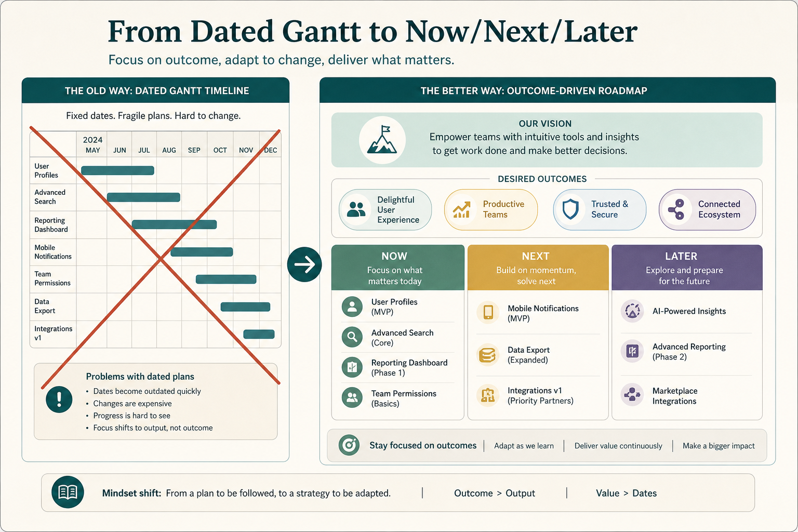

A timeline roadmap is a pile of assumptions; prototype strategy instead
Source: Janna Bastow (@simplybastow)
original post
What it claims
A timeline puts dates and durations on every item: duration known, no disruption, first-time success, every feature deserves to exist. Replace with vision (Moore elevator pitch), outcomes/OKRs, and time horizons. The roadmap is a prototype of strategy; the value is in roadmapping as discovery.
Why it matters for a PO
You can say “this is a strategy prototype, not a delivery contract.”
3 takeaways
- Far-out dates encode undefendable assumptions.
- Use vision + outcomes + horizons.
- The artifact should change as you learn.
Practice this week
Strip far dates; Now/Next/Later; put one company objective over each Now item.
Also from
- Janna Bastow (@simplybastow), original post (merged from lesson 138): The vicious cycle: nobody wants to hold the missed-deadline hot potato, so buffers grow (the developer thinks 5 days, says 7, the roadmap shows 10). Parkinson’s law fills them, longer timelines make executives tighten dates, discovery, rework, and quality get squeezed out, and blame culture follows, so the buffers grow again. Deadlines end in technical bankruptcy.